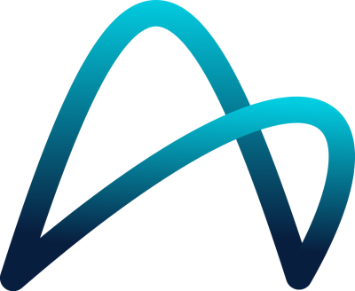
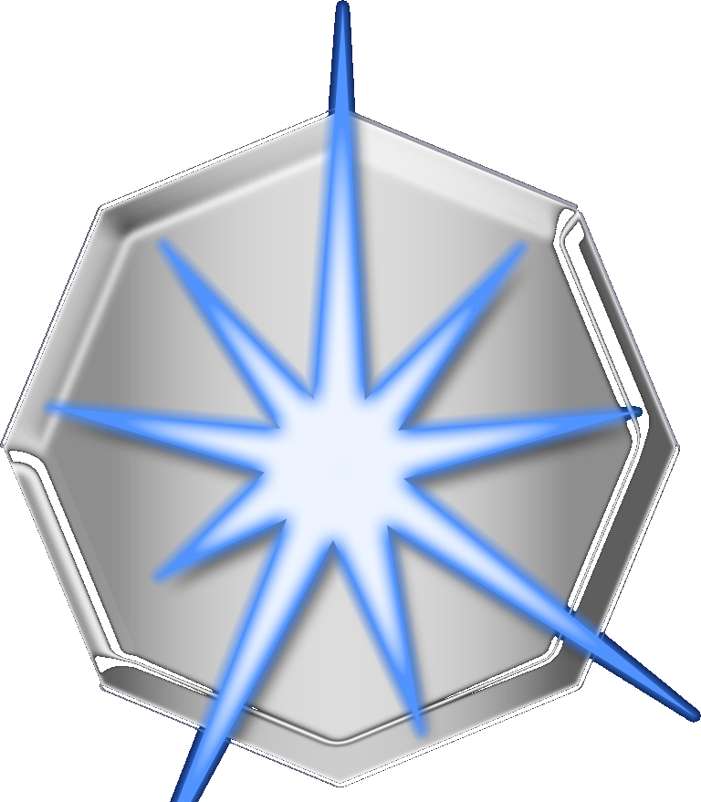
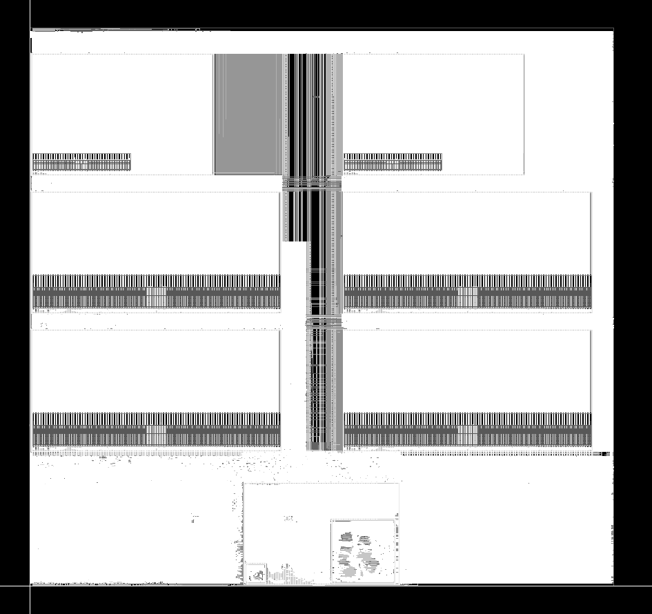
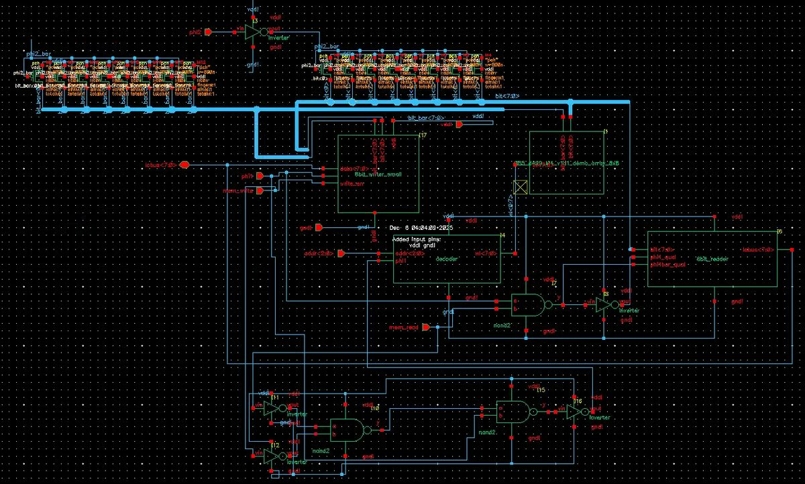

vlsi · physical design · post-silicon validation
MS EE at Columbia University, focused on VLSI. Currently validating 500Gb/s+ optical I/O silicon as a Post-Silicon Validation Intern at Ayar Labs.
I'm a chip designer who's kinda been through the whole journey: building RTL, pushing it through synthesis and PnR, closing timing, and then standing at the bench patiently validating the silicon that comes back. My work spans the full RTL-to-GDSII flow with DRC/LVS-clean tapeouts in TSMC N65, and hands-on optoelectronic test infrastructure for cutting-edge optical interconnects.
I completed my BS in Electrical Engineering with Honors at the University of Illinois Urbana-Champaign, and I'm now finishing my MS at Columbia with coursework in VLSI Design, Advanced Digital Design, Analog-Digital Circuits, and Digital Systems. (And yes, I like New York better.)

Ayar Labscool aritzia hoodie merch too!Post-Silicon Validation Intern
Proposed a time-interleaved multi-ADC sampling scheme that cut a hardware-limited 15.8 ms conversion rate to ~1 ms (a 16× speedup), enabling finer capture of thermal transients in ring resonator characterization.
Built a new Rx test station and calibration infrastructure for repeatable optoelectronic testing and TDECQ characterization in 500Gb/s+ SerDes, and characterized polarization-dependent loss and effective responsivity of the TeraPHY Rx subsystem, delivering validated metrics directly to the design team ahead of tapeout.

TibaRay Inc.fun sandwich shop nearby!Board Development & RTL Intern
Implemented peripheral RTL (SPI/I²C communication and debug functions) in C and SystemVerilog, driving a 75% efficiency boost for future testing. Redesigned magnetron circuit board schematics and layouts in Eagle with long-line impedance matching and signal integrity analysis, approved by the CTO for final production.

Top-level layout: SRAM ping-pong banks flanking the logic spine (TSMC N65)Memory-based radix-2 engine built around ping-pong SRAM banks and a shared butterfly datapath. DRC/LVS-clean sign-off in TSMC N65. Fun project to get my hands into PnR!
view RTL ↗
8-bit adder chain layout: Cadence VirtuosoFull-custom accumulator-based core designed and laid out at the transistor level: transmission-gate D-latch registers, an 8-bit ripple-carry adder with XOR-conditioned two's-complement subtract, a three-stage logarithmic shifter, an 8×8 SRAM behind a row decoder and column mux, and a pseudo-NMOS PLA controller decoding a 6-bit instruction word. Two-phase φ1/φ2 clocking with a balanced buffer tree and a bitslice floorplan; verified with Spectre and PrimeTime signoff STA.
Configurable FIR filter core in Verilog: an ALU-driven multiply-accumulate datapath backed by coefficient memory, a register file, and FIFO buffering for streaming samples.
Opens RTL source in a new tab ↗wanna talk? or just have some good coffee. email me.